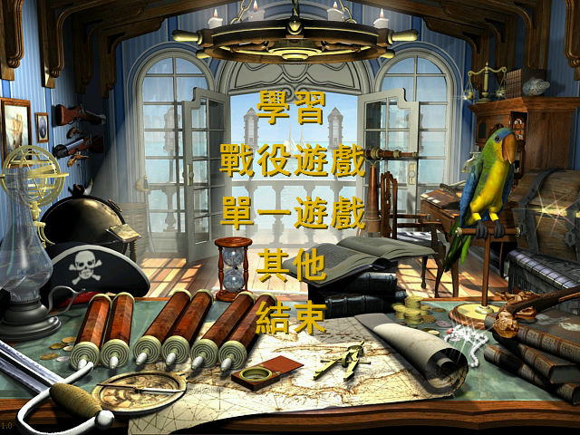
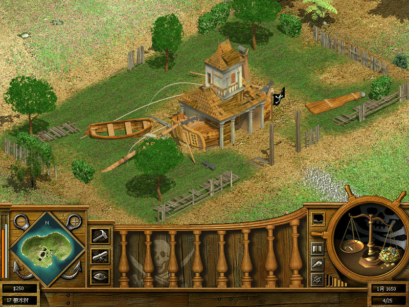

名稱：總統萬歲2／海島大亨2／天堂島2：海盜島／冒險島物語 (Tropico 2: Pirate Cove，中文／英文版)
簡介：Frog City 2003年出品的島嶼建設經營模擬遊戲，由Gathering of Developers代理發
行 [待補]。


保護：英文版為光碟SafeDisc 2.90，繁中版為光碟，破解碼：
Tropico2.exe, Tropico2_safe.exe
75 1C 6A 10
EB -- -- --
備註：VirtualBox無法直接執行，請修改Tropico2.ini裡的SoftwareDevice=1後再執行。
檔案：tropico2v12us.rar = 英文1.2更新檔
nocd10.rar = 英文1.0免光碟檔
nocd12.rar = 英文1.2免光碟檔